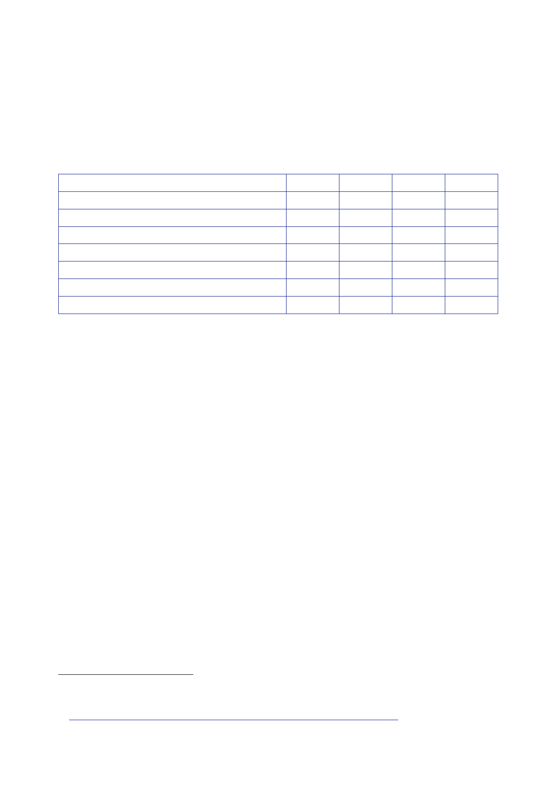

The Report
of the Iraq Inquiry
•
There might
be further indirect costs, including in relation to an increase
in
people
seeking asylum.
261.
The officials
summarised the “big numbers” in a table which is reproduced
in
full below.
Military
costs – war and immediate aftermath
Military –
RAB costs
Military –
aftermath
Humanitarian
aid
Reconstruction
aid
ECGD
Total
2002/03
1.0
–
–
–
–
–
1.0
2003/04
1.5
0.1
0.5
0.1‑0.25
0.1‑0.5
?
2.3‑c3.0
2004/05
0.5
0.15
1.0
?
?
?
1.7+
2005/06
–
0.15
?
?
?
?
?
262.
The officials
advised that any DFID contribution to humanitarian and
reconstruction
costs would
be constrained by DFID’s commitment to spend 90 percent of its
bilateral
resources
in low‑income countries. Ms Short had already written to
Mr Blair (on
5 February)
asking for advice on the approach that DFID should take and the
potential
for extra
resources. It was “quite credible to imagine DFID putting [in] a
bid for several
hundred
million pounds”.
263.
Mr Brown
and Mr Boateng received a further update on military
post‑conflict costs
from a
Treasury official the following day.159
In that
context, the official commented that
the
Treasury would also need to take account of the costs of
humanitarian assistance
and
reconstruction:
“Our line
to date has been that departments (mainly DFID) should meet these
[costs]
through
budget reprioritisation. We would welcome your steer on this but,
based on
past
conflicts, we suspect it is unlikely to be a sustainable line in
the long term.”
264.
The US
inter-agency Rock Drill from 21 to 22 February confirmed the scale
of the
shortcomings
in US post‑conflict planning, including the deficiencies of the US
Office of
Reconstruction
and Humanitarian Assistance (ORHA) and the continuing gap
between
UK and US
positions on the role of the UN (see Section 6.5).
265.
Ms Short
held a meeting on Iraq with DFID officials, including
Dr Brewer and
Mr Fernie,
on 24 February.160
The meeting
identified the “increased recognition across
159
Minute
Treasury [junior official] to Chancellor, 20 February 2003, ‘Iraq:
Update on Potential Cost and
How Should
We Present Them?’.
160
Minute
Bewes to Miller, 25 February 2003, ‘Iraq Contingency Planning:
Update’.
486